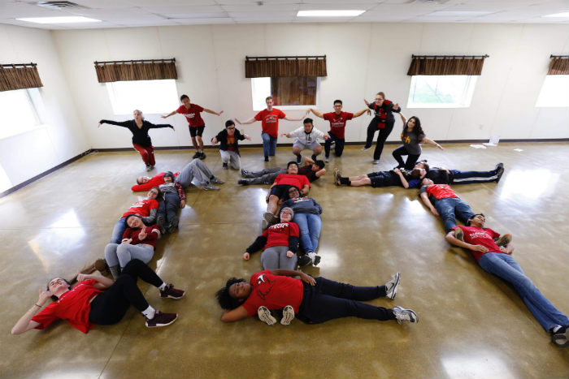
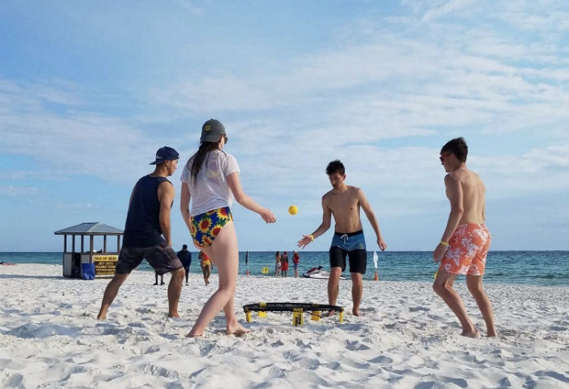

Every fall, we gather all of the CRU student groups in Chicago for
a fun night of dancing on the Chicago river. This event is a great
way to make new friends outside of our campus while taking a break
from all that studying that IIT requires. The cruise typically
happens on a Saturday near the end of September and lasts from
6-9pm. We meet at global grounds on campus and take the train to
Trump tower where we join other groups and board the boat!
Students who went on last year's boat
cruise. After the cruise ended, some students stayed downtown to
get ice cream while others took the train back home.
Fall Retreat
Every October, we take a weekend to get away from the stress of
school and hang out in nature through our fall retreat. Once
again, this event is held with students from other Chicago
universities, so it's a great way to meet up with those friends
you made at boat cruise! Throughout this time, students play
games, participate in worship, hear small sermons, and take
personal quiet time to listen to what the Lord has to say to them.
If you'd like more information about this event, please visit CRU Chicago.

Students who went to fall retreat last
year. Here we are showing our school spirit for an instagram
challenge that the CRU staff held. We ended up winning the
challenge and a pizza party!
Big Break
Wondering what to do with your spring break? Consider taking your
faith journey a step further and join us for Big Break! Big Break
is a trip we take during our spring break to bring the gospel to
others outside of our campus community. We go down to Pensacola
beach and spend our afternoons starting spiritual conversations
with anyone who happens to be there. This is a wonderful
opportunity to share what you believe in-you never know the
impact you might have on someone else's life. If you're
interested in going to Big Break, please contact us at iitcru@gmail.com.

Even though we primarily go to Florida to evangelize,
we still take some time to relax and have fun! Here are some of
our students playing spike ball, a game that's become popular on
our campus.